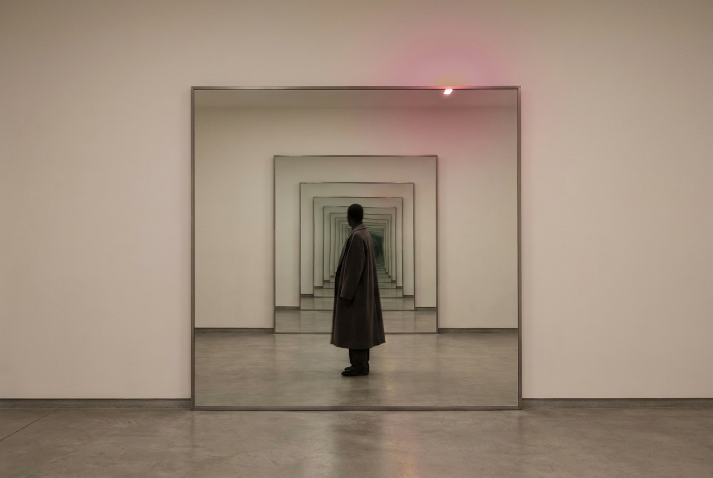

Я не сразу поняла, что вижу в этом автопортрете.
На снимке — тело художника, а на нём, как на холсте, — двенадцать QR-кодов. Каждый код отсылает к значимому моменту его жизни. Микеланджело Пистолетто называет это «зеркальной картиной» (Quadro Specchiante): дорабатывая собственное фото, он множит свои отражения и расширяет память о себе в пространстве настоящего.
Автопортрет из QR-кодов
«Автопортрет» (2022) — часть большого проекта Пистолетто QR Code Possession, где он исследует, как встречаются искусство, технологии и рефлексия. Сам художник говорит об этом так:
«Татуировка — это первичная форма коммуникации, которую сегодня я использую как художественно-технологический язык. Автопортрет передаёт мою идентичность и идентичность современного общества, заключённые в бесконечном отражении настоящего зеркальной картины».
Пистолетто — одна из ключевых фигур современного искусства, один из лидеров движения «Арте повера». Он давно работает с отражением, со слиянием искусства и повседневной жизни, с самыми разными медиа — от живописи и скульптуры до перформанса и цифровых технологий.
Зеркальные картины: зритель как соавтор
Одна из центральных идей его творчества: зеркало не отражает человека — оно превращает зрителя в соавтора. Его знаменитые Mirror Paintings («Зеркальные картины») — не только автопортреты художника, а постоянно меняющиеся портреты мира. Каждый, кто подходит, становится частью произведения.
Мне это кажется честным визуальным нарративом — и, если признаться, довольно остроумным. И очень технологичным.

Знак в центре: символ Третьего рая
Если присмотреться, в центре каждого QR-кода — яркий знак цвета фуксии. Это визуальный образ художественного манифеста Пистолетто, символ «Третьего рая» (The Third Paradise).
Символ — это переосмысленный знак бесконечности из трёх кругов. Два крайних круга обозначают противоположности: прежде всего природу и искусственный мир. Центральный круг, который рождается между ними, — творческое лоно новой человечности.
Что такое Третий рай
За этим знаком стоит целая философия. Пистолетто описывает три рая.
Первый рай — состояние, в котором человек был полностью включён в природу.
Второй рай — искусственный рай, созданный разумом, наукой и технологиями: искусственные потребности, продукты, комфорт, удовольствия. Создавая этот мир, человечество одновременно запустило истощение и разрушение природной среды.
Третий рай — третья стадия, основанная на сбалансированной связи природы и искусственного мира. Пистолетто называет это переходом к новому уровню планетарной цивилизации, без которого роду не выжить, — и говорит, что для него нужно заново сформулировать принципы и этику нашей общей жизни.
Само слово «рай» пришло из древнеперсидского и означало «защищённый сад». Мы — садовники, которым поручено беречь эту планету и исцелять живущее на ней общество. Не возврат к природе и не торжество технологий, а третий путь, где природа и созданный человеком мир входят в динамическое равновесие.
Зеркало, в котором появляетесь вы
Я провела параллель с тем, чем занимаюсь в арт-коучинге. Зеркало Пистолетто ничего не навязывает — оно ждёт, пока вы подойдёте, и только тогда картина становится завершённой. Мне это близко: человек не рассматривает готовый образ себя, а достраивает его собой — здесь и сейчас.
И «третий рай» — про то же. Не первый, где надо раствориться, и не второй, где всё придумают за нас, а третий — равновесие, за которое каждый отвечает лично. В своём масштабе. На своём холсте.
Если захочется увидеть свой собственный третий путь — приходите к нам на арт-коучинг. Мы там как раз этим и заняты: смотрим в зеркало, которое отражает не лицо, а того, кем вы можете стать. Готовы подойти?
Источники по теме: манифест «Третий рай» — terzoparadiso.org; проект «QR Code Possession» и «зеркальные картины» к 90-летию художника (Galleria Continua) — galleriacontinua.com, Artsy; о художнике и «Арте повера» — Artnet и официальный сайт pistoletto.it.
#смотрим #Пистолетто #ТретийРай #АртеПовера #зеркальныекартины #современноеискусство #визуальныйнарратив #арткоучинг #МыДолжныБытьВоображаемы